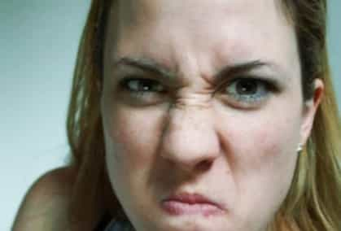
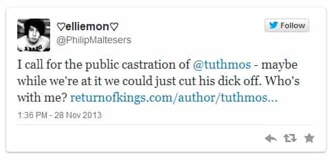
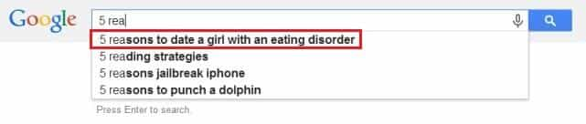

< < < Back
A Year Of Outrage – Return Of Kings
My 2013 was reasonably productive. My first post of the year extolled the virtues of lifting weights, retelling the story of how a few minor gym results had made a noticeable impact on my dating life. Later that month, I talked about how All Girls Like Rough Sex, a truism that I discovered in a very unexpected way and have since repeatedly confirmed. I closed out the month breaking down the 7 most common traits of one of the most cowardly, pestilent characters a masculine man can encounter—the Male-Feminist White Knight.
Later, I told the story of how meeting a foreign girl—who had some respectable girl-game—laid bare just how terrible American women are at securing a man nowadays. I followed that with an essay on the 15 Magical Years of Womanhood where I broke down the story arc of today’s typical girl. My favorite piece, Meeting Melissa, contrasts what it would be like to meet the same girl 20 years apart.
I floated a few alternative items, including a two-volume Dictionary of American Girlspeak and my thoughts on the mighty 1-to-10 scale. I also advised men to avoid helping their “friends” with no game, warned them that All Girls Are Cheapskates, and alerted them to the dangers of working for a female boss.
Things started to pick up when I submitted a piece called 24 Signs She’s a Slut, where I detailed some iron tells for promiscuous girls. It remained quiet at first, but the article soon blew up on Twitter and various places around the Internet. Vice Magazine wrote about it, ThoughtCatalog syndicated it, and UCLA’s feminist magazine even drew up a nice graphic for the occasion. I eventually published a sequel—which, in my opinion, is better than the original—that expanded on the original abridged list.

Soon after 24 Signs, ROK celebrated #fatshamingweek, a fat-bashing bonanza that ballooned on the Internet and was even covered on the local news. My contribution, 10 Tell-Tale Signs She’s A Secret Internet Fatty, gave men some concrete advice on avoiding the landmine field that is online dating.
The capstone of the year was the massive viral event around my 5 Reasons to Date a Girl with an Eating Disorder piece. Apart from garnering over 168,000 likes on Facebook, being tweeted 4,000 times, and crashing the robust ROK server multiple times, the post inspired hundreds of Internet responses. A few responded in Youtube videos.
Others threatened me with graphic death and mutilation in tweets and emails. And, no fewer than three petitions were circulated to “take it down.” National Eating Disorder organizations “spoke out” against it. I was told by several people that they’d overheard random girls talking about it in their daily business.

Several major publications—including the DailyMail, the Huffington Post, Cosmopolitan, and Yahoo Shine—covered the event, some of them multiple times. I was interviewed by BuzzFeed at length about the post. Girls Gone Wild wrote the most articulate response to it. And, for a brief moment, typing the first few characters of “5 reasons” into Google would direct you straight to the article.

When the (damaged) ladies at Jezebel finally caved and broke their gag order on ROK–succumbing to their pent-up female appetites–they squirted out a diatribe on #FatShamingWeek, 24 Signs, and 5 Reasons. It didn’t take long for me to notice that a not-insignificant number of the outrage was coming from unambiguously attractive girls, 16 of which I recognized in my follow-up piece.
It also wasn’t lost on me that the spirited reaction to my Eating Disorder article underscored a few facts that some of us take for granted. I wrote about it in the statement I was asked to provide by the author of the most prominent Huffington Post piece, a Dominique Mosbergen. She, needless to say, didn’t publish a word of it:
I’ve learned several lessons from the massive public response to my article. I didn’t write it as a publicity stunt, to drive traffic, or to elicit a reaction (i.e., “troll”)—as many people have speculated. I also didn’t do it as a social experiment, though it’s inadvertently become exactly that. Among the many conclusions I can’t help but draw is that middle-class white women are the most protected and privileged group in our society. We’ve known this, to an extent, when we’re told things like American white women are the principle beneficiaries of affirmative action, or when we see rifts in the women’s movement open along racial lines. This minor event underscored this fact on another level. While I’m repeatedly told that eating disorders are afflictions that strike women of all races and social classes, the overwhelming majority of responses—and the most prominent and spirited ones—have come from precisely that demographic.
Not only do middle-class white women enjoy the luxury of having something so innocuous as a 600-word Internet post written by some stranger be “the worst thing that’s happened to them,” they have national organizations, major publications like your own, and droves of obsequious male supporters climbing over each other to come to their defense. What these women don’t realize is that the discomfort that they’re experiencing— of having their plight and challenges “trivialized” or “dismissed”—is how other demographics feel every day. But, in this case, these women and their supporters feel perfectly justified and, more importantly, enfranchised to lash out in violent (and probably illegal) threats of death and mutilation against me and my colleagues who are merely, and inadvertently, pointing out this uncomfortable truth. Most other demographics, unfortunately, don’t have a national support network ready to come to their aid when someone so much as writes something that hurts their feelings, but they have every ability to simply ignore.
Writing for ROK in 2013 has been a wildly interesting and exciting experience. Here’s to another year of the same.
Read More: The Holidays: Amateur Nights on Steroids


{kind=link}
{kind=link}
{kind=link}
{kind=link}